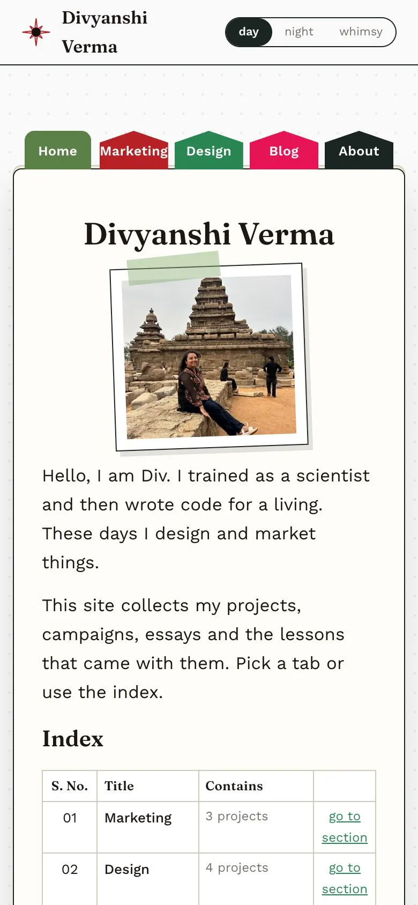
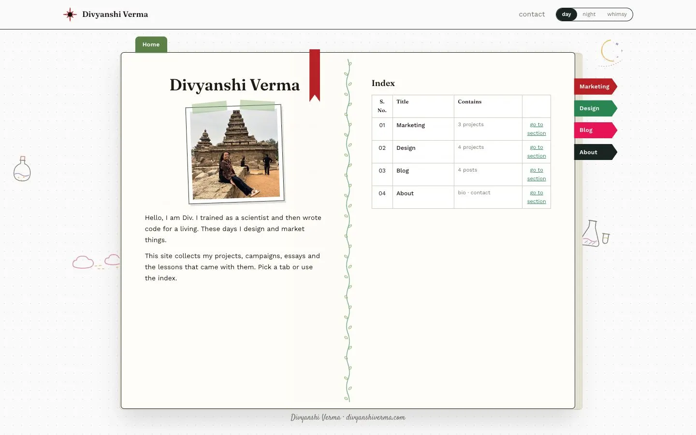

Divyanshi Verma
My own site, designed as an open notebook with tabbed sections.
My personal site, collecting my marketing and design work and a blog.
Visit divyanshiverma.com
Design decisions
- The whole site is an open paper notebook: a vine drawn down the spine, a taped photo on the left page, a red ribbon bookmark, and coloured section tabs (Marketing, Design, Blog, About) sticking out of the right edge.
- Navigation follows the book. The tabs switch sections, a green 'Home' tab sits on the top edge, and a small running header in the top corner names the current section.
- Every section uses the same two-page spread, prose on the left and a ruled index table on the right with serial numbers, titles and page counts, so the structure only has to be learnt once.
- Type: Fraunces for headings, Work Sans for body copy and a handwritten script for the signature under the book, on an off-white (#FAFAFA) dotted page.
- A three-way day, night and whimsy switch in the header changes the theme of the whole site.
- Thin hand-drawn doodles in colour (a flask, clouds, a moon, a cat, mushrooms) sit in the margins around the book and change from section to section.
- Mobile: the side tabs move into a row across the top of the book, and the index table drops below the introduction in a single column.
On a phone

Further down the page
